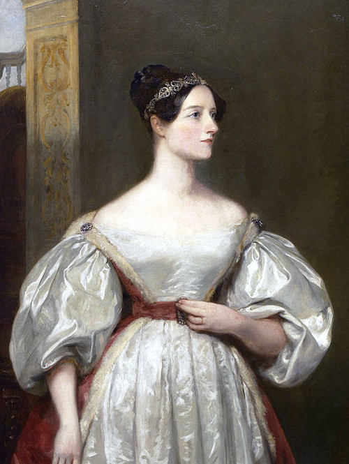
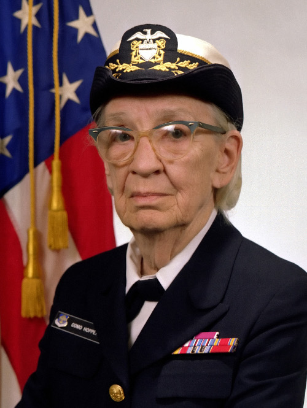
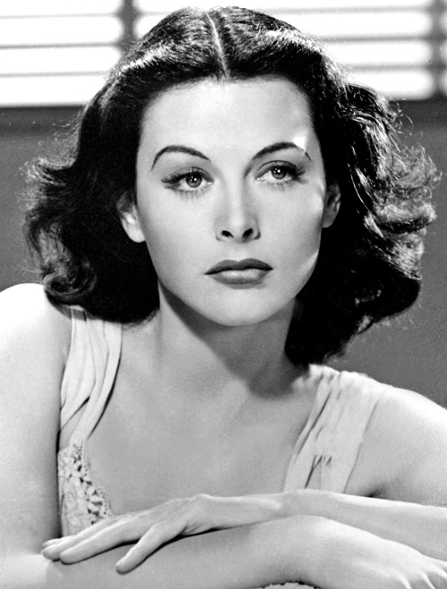
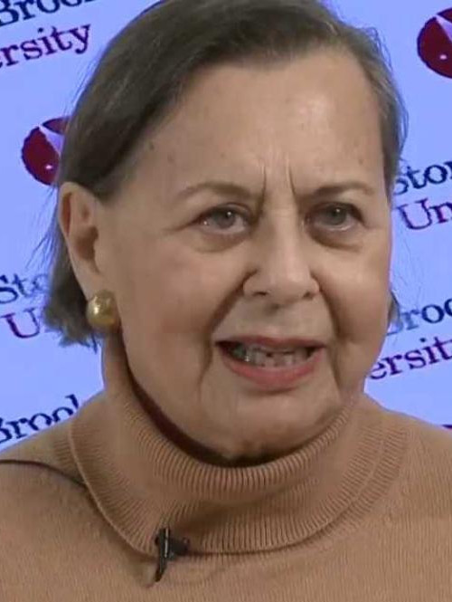
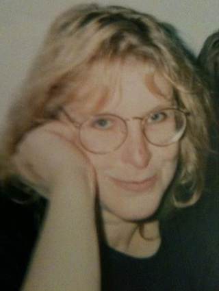
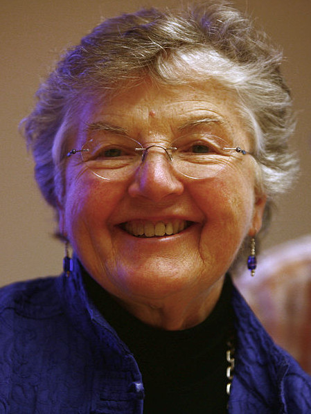

Ada Lovelace
Matemática
Fue una matemática, informática y escritora británica, célebre sobre todo por su trabajo acerca de la calculadora de uso general de Charles Babbage, la denominada máquina analítica. Entre sus notas sobre la máquina, se encuentra lo que se reconoce hoy como el primer algoritmo destinado a ser procesado por una máquina, por lo que se la considera como la primera programadora de ordenadores.

Grace Hopper
Informática y Militar
Fue pionera en el mundo de las ciencias de la computación y la primera programadora que utilizó el Mark I. Entre las décadas de los 50 y 60 desarrolló el primer compilador para un lenguaje de programación así como también propició métodos de validación.

Hedy Lamarr
Actriz de cine e Inventora
Fue inventora de la primera versión del espectro ensanchado que permitiría las comunicaciones inalámbricas de larga distancia. Los principios de su trabajo se incorporan a la tecnología Bluetooth y son similares a los métodos utilizados en las versiones heredadas de Wi-Fi.

Evelyn Berezin
Ingeniera Informática
Creó el que se considera el primer ordenador de oficina, desarrolló el primer sistema computerizado de reservas de vuelos en tiempo real. Pero su mayor contibución quizá sea una idea que tuvo en 1968, cuando se le ocurrió crear un programa para crear y gestionar textos que pudiese ayudar a las secretarias en el desempeño de su trabajo.

Jude Milhon
Escritora y hacker
Famosa hacker y defensora de los derechos personales en internet. Fue la autora del término ciberpunk, y miembro fundador del grupo con el mismo nombre. Era una acérrima defensora del placer de trastear con la tecnología a su antojo, y animaba a las mujeres a acceder a internet no por necesidad sino por elección personal.

Frances Elizabeth Allen
Ingeniera Informática
Pionera en el campo de optimizar compiladores. Sus logros incluyen trabajo en compiladores, optimización de código, y computación paralela. También tuvo un rol importante en la creación de lenguajes de programación y códigos de seguridad para la Agencia de Seguridad Nacional Americana. Allen fue la primera socio de IBM y en 2006 se convirtió en la primera mujer ganadora del Premio Turing
Las Mujeres del ENIAC
Matemáticas, físicas, programadoras

La ENIAC (Computador e Integrador Numérico Electrónico) fue una computadora multipropósito diseñada a finales de 1945. Precursora de los actuales ordenadores, era programada por seis mujeres.
- Betty Snyder Holberton.
- Jean Jennings Bartik.
- Kathleen McNulty Mauchly Antonelli.
- Marlyn Wescoff Meltzer.
- Ruth Lichterman Teitelbaum.
- Frances Bilas Spence.
Son poco conocidas porque en su momento fueron clasificadas como personal administrativo, secretarias, ayudantes, e incluso como modelos que posaban al lado de la ENIAC en las fotos para las revistas y periódicos de la época.